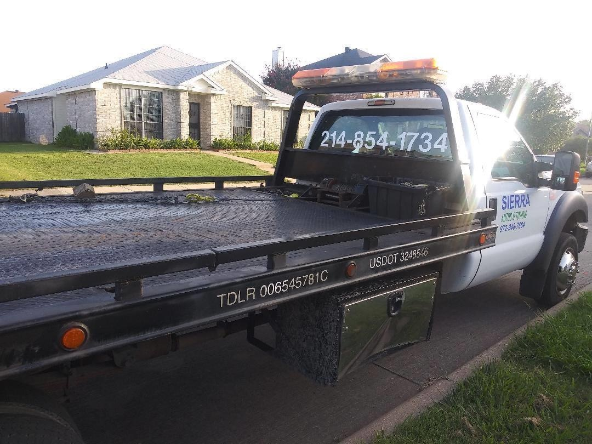
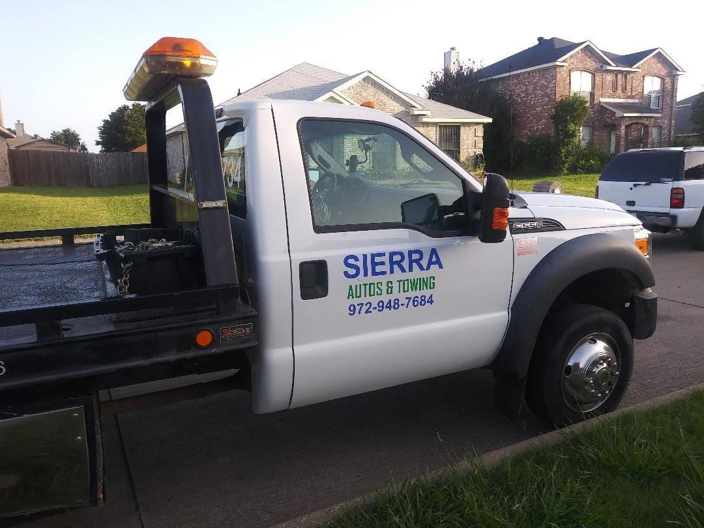
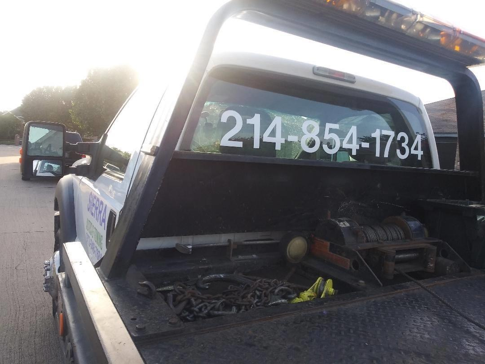
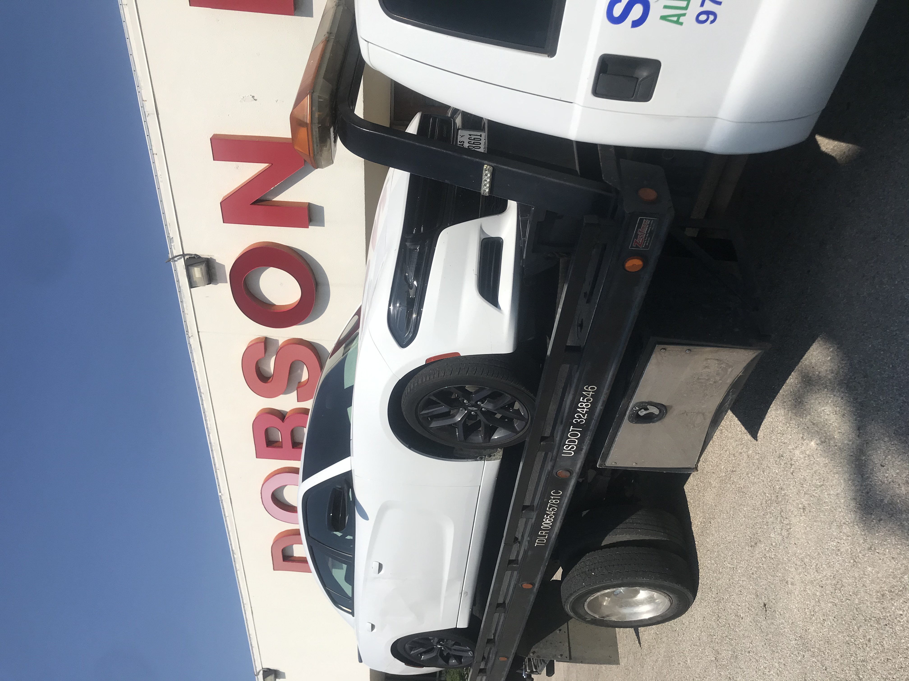

SIERRA AUTOS · DALLAS, TX
Fast, affordable 24/7 towing and roadside assistance across Dallas, Mesquite, Garland, Richardson, Plano and the DFW metro area. When you search “tow truck near me” in Dallas—we’re the team that answers.
Sierraauto@yahoo.com// WHAT WE DO
Professional drivers, fast arrival times, and reliable 24/7 towing service across Dallas, Mesquite, Garland, Richardson and nearby cities.
Emergency towing in Dallas and the DFW metro—day or night. When your vehicle breaks down, we dispatch a tow truck within minutes.
Stranded on the shoulder or in a parking lot? We provide roadside assistance across Dallas, Mesquite, Garland and surrounding areas.
Dead battery? Our team delivers safe, fast jump‑starts so you can get back on the road without delay.
Locked out of your car? We offer damage‑free lockout service—quick, professional entry when you need it most.
Flat tire on the highway or in the city? We provide fast tire changes across the Dallas metro.
Careful, professional accident recovery and towing after collisions—serving Dallas, Mesquite, Garland and nearby communities.
From local Dallas towing to long‑distance hauls across Texas, Sierra Autos moves your vehicle safely and on schedule.
// ABOUT US
Sierra Autos is a locally owned towing company based in Dallas, Texas. We focus on fast response times, professional drivers, and customer safety on every call.
We serve Dallas, Mesquite, Garland, Richardson, Plano and the wider DFW metro with reliable towing, roadside assistance, and emergency tow truck service. When drivers search for “Dallas towing service” or “tow truck near me,” we aim to be the first call they make.
Our business is built on strong values: hard work, honesty, and respect for every customer and every vehicle.
// THE DIFFERENCE
We know every minute counts when you’re stranded. Our tow trucks are positioned across the Dallas metro for quick response.
Courteous, trained drivers who treat your vehicle like their own and keep you informed every step of the way.
Straightforward rates with no hidden fees—clear pricing for towing and roadside assistance in Dallas.
Licensed, insured towing service for complete peace of mind on every call.
We cover Dallas, Mesquite, Garland, Richardson, Plano, Irving and surrounding areas with fast, local towing service.
// OUR FLEET
A look at our tow trucks, equipment, and the professionals behind the wheel.




// GET HELP NOW
If your vehicle is disabled, stuck, or you’ve been in an accident, call Sierra Autos and we’ll dispatch a tow truck immediately. We serve Dallas, Mesquite, Garland, Richardson, Plano and the DFW metro 24/7.
Sierraauto@yahoo.com